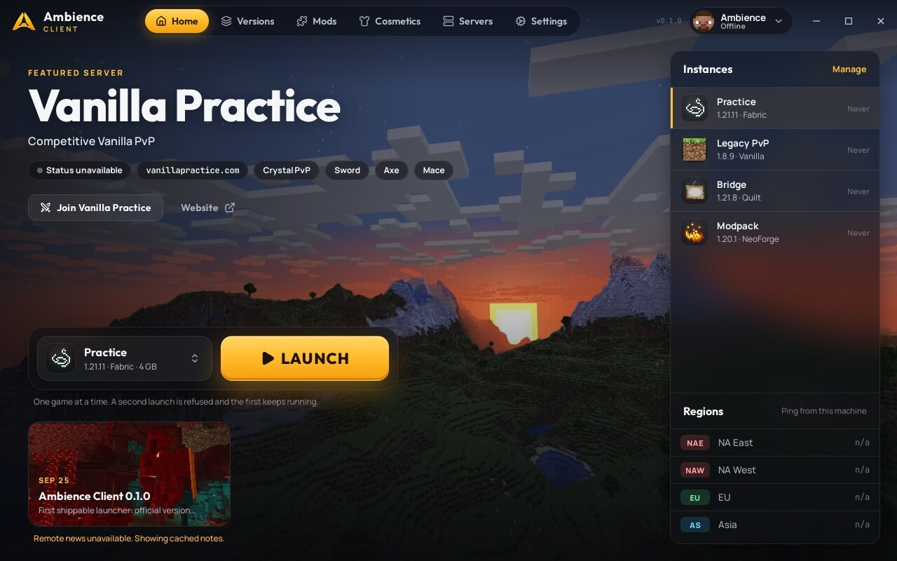
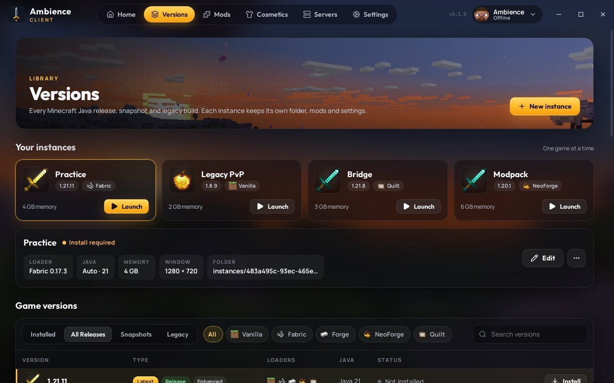
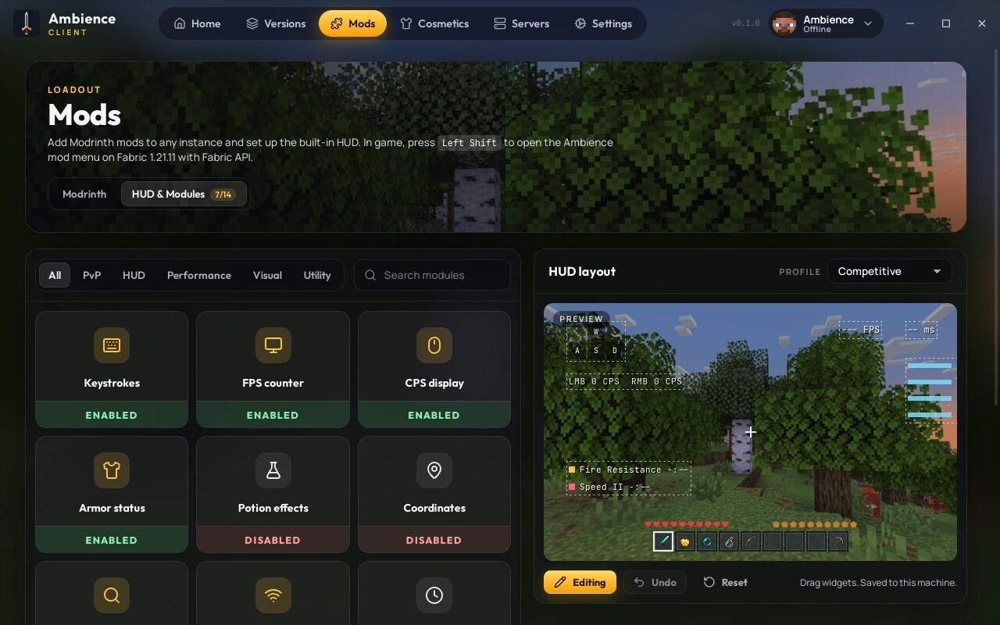

Ambience Client
A desktop launcher for Windows, macOS and Linux. Install any official Minecraft version, keep separate instances, add Fabric, Quilt and Modrinth mods, and launch with your own Microsoft account.

What it does
A native desktop app built with Tauri and Rust. It is not a website and does not run in a browser.
Official versions
Releases, snapshots and legacy builds from Mojang's version manifest. Game files are checked against their SHA-1 hashes.
Separate instances
Each instance has its own game folder, mods, saves and settings, with its own version, loader and memory.
Mods
Fabric and Quilt loaders, and Modrinth mod search and install into a chosen instance.
Built-in HUD
An optional in-game HUD for Fabric with keystrokes, FPS, CPS and armor. Layouts are saved on your computer.


Account & privacy
You sign in with Microsoft to play the copy of Minecraft you own. Ambience never sees your password.
- The launcher starts Microsoft's device code sign-in and shows you a short code.
- You enter the code on Microsoft's own page (
microsoft.com/link) and sign in there. - The launcher exchanges the result through Xbox Live and Minecraft services, requesting only the
XboxLive.signinandoffline_accessscopes. - The Minecraft access token is used only to start the game for you.
- Tokens are stored only on your computer, in the system keyring or a file only your user can read.
- Tokens are never sent to any Ambience server. There is no Ambience server, and no account data is collected.
- Telemetry and crash reports are off unless you opt in.